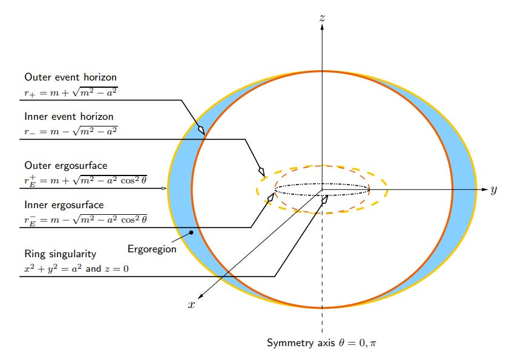
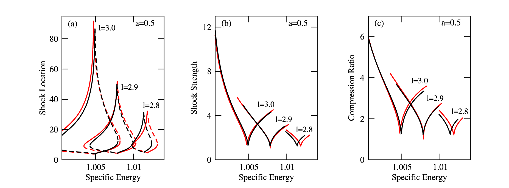
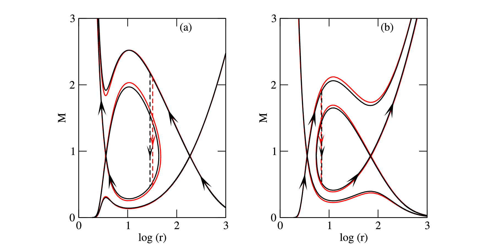

Using a pseudo-Kerr formalism to study accretion and wind flows around rotating black holes
Hydrodynamic flows around black holes is a fascinating area of research that provides a window into the processes that power relativistic jets and energetic particle acceleration. However, this is a challenging task when studied using the full general relativistic framework. In our work, we find an exact pseudo-potential formalism that can be used to study hydrodynamics around rotating black holes very accurately. This formalism can be a useful tool in numerical simulation studies and to extract spin parameter of black hole candidates.
Accretion is one of the most fundamental physical processes in the universe that describes the inflow of matter towards a central gravitating object or the centre of mass of an extended system and is responsible for the formation and evolution of structures in the universe. However, the most spectacular observational manifestation of accretion occurs when the central objects are the most compact in the cosmos – black holes!
The existence of black holes (BHs) is a remarkable prediction of Einstein’s theory of General Relativity (GR). According to GR, gravity is a geometric phenomenon that arises from the curvature of space-time instead of being an invisible force that attracts objects towards each other. The more massive an object, the more it curves space-time. BHs are regions in space bounded by a surface called the event horizon from which nothing, not even light, can escape. In this sense, they are perfect space-time traps, and the event horizon marks the boundary of no return. This means that a BH itself is invisible. However, astronomers can still observe them indirectly through the way it affects the motion of nearby stars and pulls matter into orbit around them. As matter accretes around a BH, it heats up. It releases vast amounts of energy in the form of radiation. In this way, the accretion of matter onto BHs powers some of the most luminous sources in the universe.
According to GR, a BH is characterized by just three observable properties – mass M, angular momentum J and electric charge Q. In any realistic setting, however, a BH is unlikely to have any electric charge because it will typically be rapidly neutralized by the plasma surrounding it. Therefore, astrophysically relevant BHs can be fully described by only their mass and angular momentum. It is helpful to define the dimensionless spin parameter of a BH as $a=J/M$, i.e., the angular momentum per unit mass of the BH, that can take any values within the range 0<|a|<1. The BH is non-rotating when a=0 and a=1 correspond to the maximum value of the angular momentum a BH can attain. To determine the mass of a BH, astronomers can observe how groups of stars and gas move around the BH, which is a relatively easy task. However, the spin is rather subtle because it requires probing the strong gravity region close to the BH, where relativistic effects are prominent. So, the measurement of BH spin requires a model that can accurately describe the relativistic effects close to the event horizon of the BH. In general, most of the astrophysical BHs are expected to be rotating. They are defined by the Kerr metric, which is an exact solution of the Einstein field equations of GR. The geometry of the space-time described by the Kerr metric is shown in Figure 1, where all the important surfaces are marked. The outer event horizon is essentially the surface from which nothing can return. The shaded region called the ergoregion is another essential region where everything is forced to rotate with the BH and has exciting observational consequences.

Figure 1: The geometry of the space-time described by the Kerr metric (Credit: Matt Visser)
To study accretion flows around a BH, one must solve the relativistic hydrodynamics equations. Since this task is very challenging when studied using GR, it is often useful to use the pseudo-potential approach. The advantage of the pseudo-potential approach is that one can use the equations of Newtonian hydrodynamics but with the Newtonian potential replaced by a pseudo-potential that mimics the relativistic effects around BHs. One can use this approach to easily study complex processes around BHs as if the central object is a Newtonian object. This approach is also helpful in easily handling radiative transfer problems in time-dependent numerical simulations just by replacing a few lines in numerical codes written for a Newtonian object. However, the pseudo-potential must be accurate enough so that the errors crept in for not using GR equations are within the observational errors. For non-rotating BHs, a pseudo-potential was introduced by Paczynski & Wiita (1980, hereafter PW80) that captures the relativistic features of the non-rotating BHs quite accurately and has been extensively used to investigate the physical properties of accretion flows around non-rotating BHs.
Our recent publication derives the exact form of the effective potential for hydrodynamic flows around a rotating BH from the Kerr metric. We assume that the accretion flow is confined near the equatorial plane of the BH, and we find that this potential accurately reproduces the relativistic features of particle orbits for the entire range of the spin parameter. One can treat this effective potential as a pseudo-potential used in a Newtonian set of equations to describe accretion flows around rotating BHs. We call this the pseudo-Kerr formalism because this uses a Newtonian approach to study hydrodynamics around rotating (Kerr) BHs which are relativistic objects. So, knowledge of Newtonian hydrodynamics is sufficient. One needn’t have to bother about GR when applying this potential to study accretion flows around BHs. This is because all the relativistic effects are already incorporated into the potential. Moreover, a Taylor series expansion of our potential reveals that the leading order term is the PW80 potential. So our potential includes all the higher-order corrections to the PW80 potential for non-rotating BHs.
We use the pseudo-potential in a Newtonian approach to study accretion and wind flows around rotating BHs.

Figure 2: The variation of (a) shock location, (b) shock strength and (c) compression ratio with the specific energy of the flow for a=0.5 and different values of angular momentum l=2.8, 2.9, 3.0. The stable (and unstable) shock locations are shown by solid (and dashed) curves. The left (and right) segments of each set of curves for a particular value of angular momentum corresponds to accretion (and winds). The GR curves are shown in red color.

Figure 3: An example of shock solution in (a) accretion (a=0.5, l=3.0, E=1.003) and (b) wind (a=0.5, l=3.0, E=1.007) . The dashed vertical arrows indicate the stable shock transitions and the GR solutions are shown in red color.
The wind flows are outflowing matter from the region close to a BH and is an opposite process to accretion. For simplicity, we assume that the flow has no dissipation, i.e., the fluid is chosen to be inviscid (having zero viscosity). This means that the specific angular momentum of the flow remains constant. We then solve the equations of Newtonian hydrodynamics and show that the accretion process is necessarily transonic in nature. Transonic flows in this context mean that the radial velocity of the matter is subsonic (velocity less than sound speed) far away from the BH, and it gradually increases to become supersonic (velocity greater than sound speed) and finally enters the event horizon of the BH with the speed of light. Transonic flows are essential because they provide evidence for the formation of shock waves which are abrupt and strong discontinuities in the properties (pressure, temperature and density) of the accreting matter usually associated with violent phenomena in BH environments. Shock waves play a critical role in the dynamics of accretion flows. They can have important effects on the structure and evolution of accretion flows. In studies of transonic flows, it is useful to define a quantity called Mach number M=v/as, which is the ratio of the velocity of matter $v$ and the speed of sound $a_s$. Then, M<1 for subsonic flow and M>1 for supersonic flow. Two crucial parameters useful in studying shock waves are the shock strength S=M-/M+ and the shock compression ratio R=ρ+/ρ-, where $M$ is the Mach number, and ρ is the flow density. Both the quantities are calculated at the location of the shock, and the +/- signs correspond to quantities just after/before the shock. These quantities measure the discontinuities in the Mach number (or velocity) and density of the accreting matter.
We investigate the shock solutions in accretion and winds in detail. Comparing our results with the GR solutions reveals that our approach reproduces the GR values accurately. In Figure 2, we show the variation of the shock location, shock strength and shock compression ratio as a function of the specific energy for different values of the angular momentum of the flow for both accretion and wind. One can observe that the values are very close to the GR values (the red curves). In Figure 3, we show an example of a shock solution (the variation of the Mach number with the radial coordinate) for both accretion and wind and compare it with the GR solution (the red curves). The shock location in both cases is shown with dashed vertical arrows.
We find that our approach reproduces the GR results with high accuracy, and the errors, if any, are all within observational limits. This is true even when one chooses a highly spinning BH with a~1. This formalism can be a useful tool to study various aspects of accretion processes around BHs and to carry out numerical simulations that could provide new insights into problems that are usually tedious when studied using the GR approach.
Original paper: Transonic Accretion and Winds Around Pseudo-Kerr Black Holes And Comparison with General Relativistic Solutions
First Author: Abhrajit Bhattacharjee
Co-authors: Sandip K. Chakrabarti, Dipak Debnath
First author’s Institution: Indian Centre for Space Physics, Kolkata , India